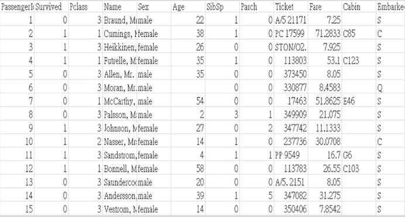
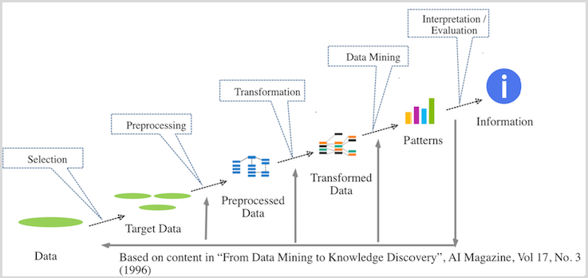

The titanic disaster is the most infamous shipwrecks in history. Although there were some elements of luck involved, some groups of people were more likely to survive than the others.
| Feature | Meaning |
|---|---|
| survival | Survival(0 = No; 1 = Yes) |
| pclass | Passenger’s ticket class(1 = upper; 2 = middle; 3 = lower) |
| name | Passenger’s name |
| sex | Passenger’s sex |
| age | Passenger’s age |
| Feature | Meaning |
|---|---|
| sibsp | Number of siblings/spouses aboard |
| parch | Number of parents/children aboard |
| ticket | Ticket Number(Type) |
| fare | Passenger's fare |
| cabin | Passenger’s cabin |
| embarked | Port of Embarkation(C = Cherbourg; Q = Queenstown; S = Southampton) |

50% of the total test set will be assigned to the pubic leaderboard for all users50% of total test set) will be revealed